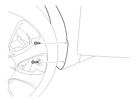
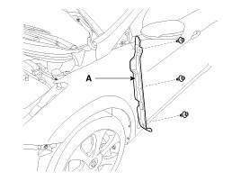
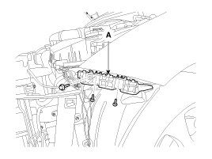
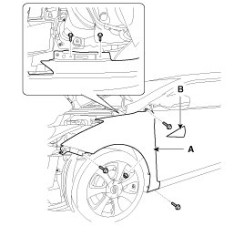

Front Fender: Service and Repair
Replacement
CAUTION:
- Be careful not to damage the fender and body.
- When removing the clips, use a clip remover.
1. Remove the front bumper.
2. Remove the head lamps.
3. Loosen the wheel guard mounting screws.

4. Detach the clips and then remove the fender insulator pad (A).

5. After loosening the mounting screws and bolt, then remove the front bumper side mounting bracket (A).

6. Using a screwdriver or remover, remove the delta garnish (B).
7. After loosening the fender mounting bolts and nut, then remove the fender (A).

8. Installation is the reverse of removal.